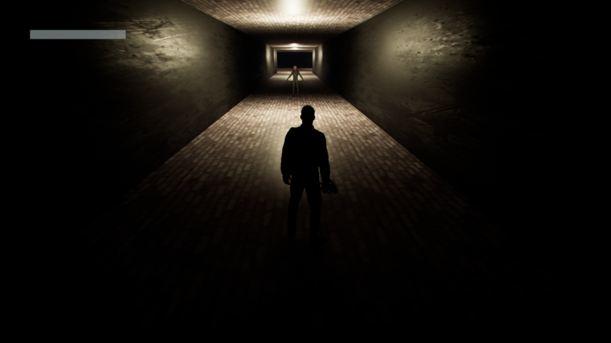

The countdown started at 5 PM on Friday. Forty-eight hours. One theme. No team. Just me, a room full of developers from entirely different backgrounds, and a decision I'd already made: this one would be mine alone.
When the theme appeared, WORN, the noise in the room faded.
My mind went somewhere specific. Not to superheroes. Not to treasure maps or trails.
To a question I'd been circling in my Psychology studies: What happens when the face we show the world becomes more familiar than our own?
I opened a blank project and started building.
The Concept
WORN would place players in a world far more intimate than most horror games dare. You wouldn't have weapons, you wouldn't have a way out. Instead, they'd ask you to stare at the mirror: see what this character does, what's pressed in the drawer. That's a question of identity. You accept one of those horrible options, and they are you. You choose. But that choice: you will pay.
The camera system started as a functional decision. First-person felt right for vulnerability. When you see what this character does, you're placed in the danger. Their position of control seems real for the shattered mirror reflections, distorted memories. Then I moved it.
The shift wasn't just mechanical. When the player puts on the mask, they literally step outside themselves. They watch their own character from behind. The perspective change is the disassociation.
This accident became the game's thesis statement. I hadn't planned it; the constraint revealed it.

Building Under Pressure
By 2 AM, nothing worked. The mesh topology broke. NPCs created explosions of polygon scatter. The AI couldn't pathing. Four hours of debugging later, I found the problem: a single variable that wasn't returning properly.
The lesson burned into my memory: after hour 16, only polish. No new systems, no restructuring. The risk compounds faster than the reward.
I kept mine small. It wasn't too simple, either. The theme demanded something I'd questioned my entire Psychology career: what happens if we live as someone else? Those masked figures lean toward chaos. Slowly, each one moulding up and reminding her of her mask.
The faces are the mask and the lies and self — from the player's face. A single line of text appears: "We are in hiding from each other."
The narrative was simple: "There's only one path, and it destroys us in half." For the game mechanic: the player felt the same road on the game screen.
The horror isn't the chase. It's the breakdown we create when every role becomes eventually ourselves.
The build started crashing with twelve hours remaining. Progress bars resetting. Scenes erasing. Minimal assembly of something that wouldn't survive. The exported version missed at minimum 15-20 assets. I had to restart.
The game was 5 problems behind, several new sub-level state possibilities. The AI accidentally got confused. The 'cinematic ending' — most likely doesn't work at the last batch.
But it worked. An idea that lived only in my head 48 hours prior was now something anyone could download and experience.
What I Learned
Constraints don't limit creativity. They focus it.
My original scope included branching storylines, multiple environments, dynamic dialogue, original voice acting. The final game has a solid little core. A REAL prototype, and it ran and it worked and I wanted a full 4 AM finish.
Every bug improved the mood. The limits are forced and the filters became a deliberate focus, something honest.
Tools serve intention, not the reverse.
I approached this with barely enough Unreal Engine Blueprint proficiency. I didn't try to build a complete power sweep. It reached the Blueprint visual scripting wall — through visual scripting.
Completion creates momentum.
A finished piece, regardless of quality, produces more energy, as unfinished ideas never consume and never visualise their own possibility.
WORN is imperfect. I see the rough edges every time I look at it. But to some, the feel matters more than any individual flaw.
The best work often emerges from discomfort.
I was not qualified to make this game. Beyond expertise in systems or structure, not equipped problems I didn't understand — yet it was my discomfort with that enough information.
The discomfort was the point. Growth doesn't happen inside competence. It happens at the edge.
Final Thoughts
Game jams compress an entire creative cycle into a single weekend. The pressure reveals patterns both productive and destructive that longer timelines skim over.
I learned how to build under constraints. I learned what type of work drains me the fastest choices I needed that my instinct was "one more thing" is real and also dangerous. Most importantly, I learned that starting scared doesn't predict finishing scared.
If you're considering a game jam or any creative challenge that feels beyond your current ability: do it.
The gap between "not ready" and "ready" is smaller than it appears. Often, the only way to close it is to begin before you're sure you can finish.
You might surprise yourself.
Project Details
Title: WORN
Genre: Psychological Horror
Engine: Unreal Engine 5.4
Development Time: 48 hours
Team Size: Solo
Event: Global Game Jam 2026, Lithuania
Links: Play WORN (Itch.io) | GGJ Page
Berkay Kalender is a Multimedia Design student at Vilnius Tech with a background in Psychology. He works at the intersection of interactive media, visual storytelling, and user experience design.